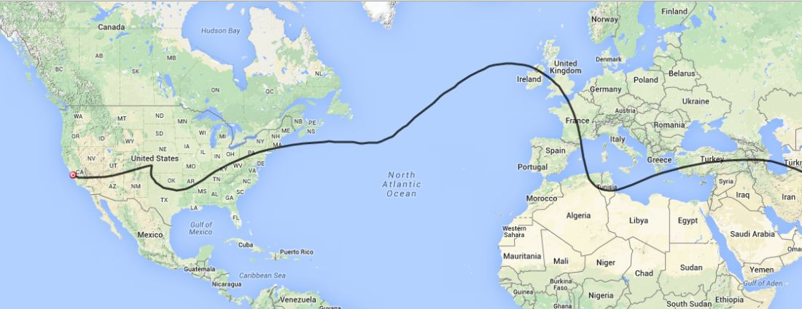

There is a new balloon, CNSP-22, flying. It’s radio call is K6RPT-11 and it is intended to be another long duration flight.
The balloon was launched this morning at 10:45 am PST from the South San Jose area. It is using a Super Cap in place of the battery so it is limited to daylight radio traffic. The link below will take you to the APRS screen to check on the balloon’s progress.
http://aprs.fi/#!call=a%2FK6RPT-11&timerange=604800&tail=604800
I have done an initial flight prediction to give us all some idea where the balloon will travel.

I will supply additional information after the balloon reaches its cruising altitude.
Don